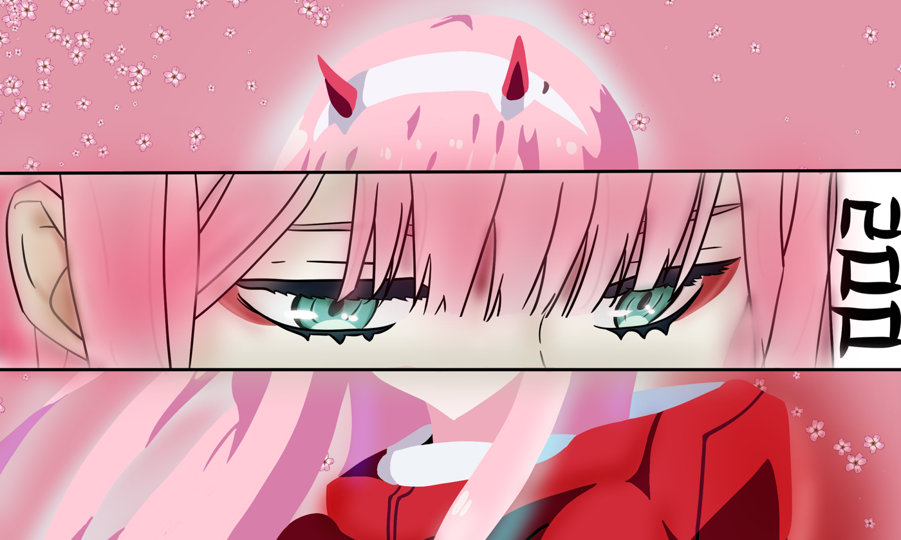

← Back
VISUAL
VISUAL
WORKS
A curated collection of creative projects exploring visual storytelling, digital art, and artistic expression.

A curated collection of creative projects exploring visual storytelling, digital art, and artistic expression.
